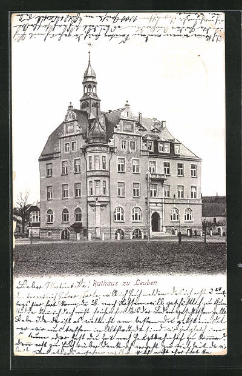
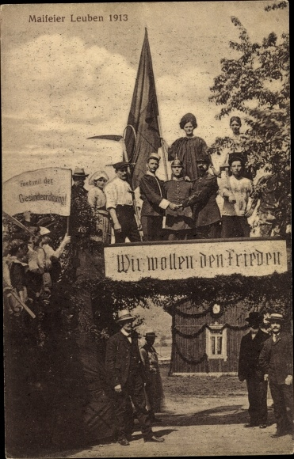

 
Trotz seiner geringen Größe war Leuben an der Route nach Pirna und Prag ein wichtiges mittelalterliches Dorf. Seine Siedlungsgeschichte geht bis auf die Steinzeit zurück.
Es wurde am Anfang des Mittelalters nur von sehr vielen Sorben bewohnt, obwohl es dann auch immer mehr von Händlern, die sich niedergelassen haben oder anderen Völkern besiedelt.
Als bisher einzige Ortschaft in der Nähe hatte Leuben eine Kirche mit Klassenzimmer, die von Gläubigen und Kindern aus Niedersedlitz, Dobritz, Laubegast und Tolkewitz besucht wurde.
Mit der Sächsisch-Böhmischen Eisenbahn drang die Industriealisierung in den Ort ein.
Wohnungen in der Nähe von Fabriken wurden in großer Zahl von einer Wohnungsbaugenossenschaft gebaut.
Das Bauerndorf entwickelte sich zu Beginn des 20. Jahrhunderts zum städtischen Vorort.
Leider wurde Leuben sehr häufig von Bränden heimgesucht, sowie immer wieder durch Kriege teilweise zerstört.
Leuben wurde am 1. April 1921 durch Dresden eingemeindet und ist seit dem zu der Stadt Dresden gehörend.
Die Nachbarschaft wurde während der Ära weiter verdichtet, als in den 1950er-Jahren und insbesondere in den 1960er-Jahren große Wohnviertel gebaut wurden.
Dies geschah in der damals gängingen Plattenbauweise. Im Zuge der Renovierungen in den 2015er Jahren durch die heutigen Eigentümer bekamen diese teilweise ein moderneres Aussehen.